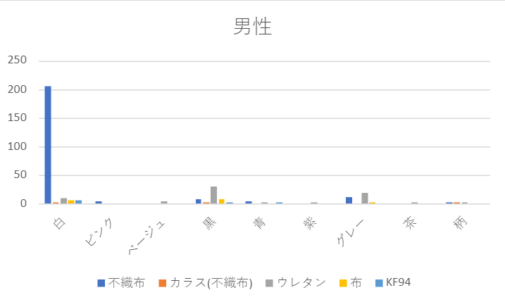
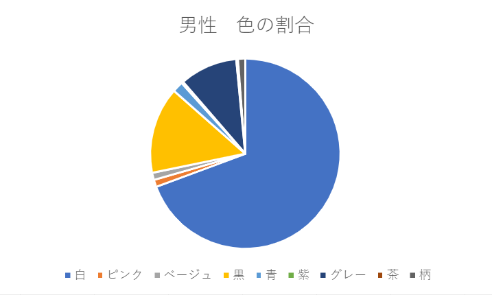
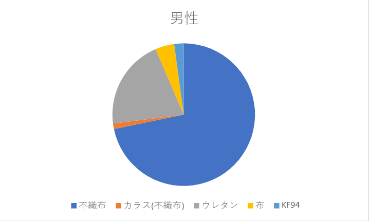
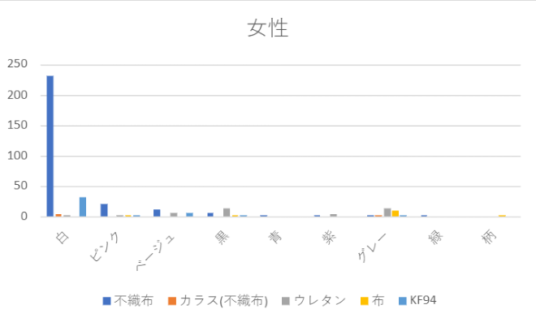
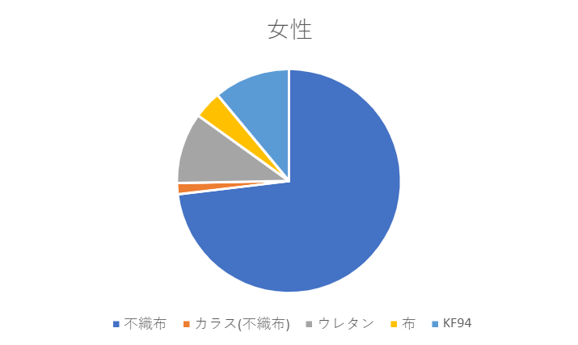

観察の内容
神奈川大学みなとみらいキャンパスの一階入り口前で、学生のマスクの素材、色、形状を男女別で観察しました。
観察の結果
男女別で観察した結果は、以下の通りです。男性
男性は、合計で331名の観察することができました。一番付けている割合が多かったのは、206人でした。
次に多かったのは、黒のウレタンのマスクを身に付けている人が30人と 全体の10％弱を占めていました。
また、全体的にシンプルなデザインのマスクを着けている人がほとんどだった。



女性
女性は、合計で373人の観察がすることができました。男性に比べて、KF94のマスクをしている人が多かった。



感想
男性と女性のマスクを観察してわっかたことが、普段は男性がどんなマスクをしているかまた、女性がどんなマスクをしているのか観察をしてことがなかったので
その男女の差が思ったより印象です。